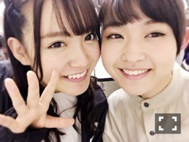
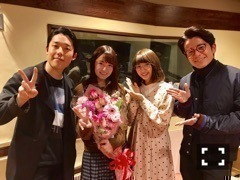
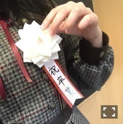
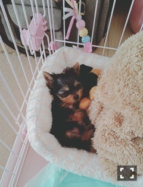

| 2017/11 24 Fri | ひめたん-0o0-その729 |

らじらー、乃木恋、取材、
他にも色々やってきました！！
永遠だとは思っていませんが
しばしのお別れを沢山してきました。
でも言われて凄く嬉しいのが
「これからも変わらずよろしくね」って。
仕事仲間として、
アイドルとしての絆は、
有り続けるんだ～って思いました。

アシスタント卒業は、例えるなら、
実家を出て一人で暮らす時
みたいな感覚でした。
お父さんお母さんお兄さんお姉さんが
いってらっしゃい(´；ω；｀)
って送ってくれるみたいな感覚。
オリラジさんや
らじらーファミリーとの出会いは
私の人生の中で大きなことでした。
ホームがあるってすごく大きい。
嬉しいことも悔しいことも
全部ここに持ってきて一緒に共有して
また頑張ろうって思える。
そんな素敵な場所でした( ˘ω˘ )
次回からはさゆちゃんが
アシスタントになりますよう
安心して任せられます♡♡
真夏さんも、さゆちゃんも、
らじらーファミリーです！

卒業発表してから今日までに
気づくことが沢山ありました。
私の卒業なんだから
私が納得していればいいじゃん
って思っていましたがそれは傲慢な考えで
見送ってくれる人たちの
あたたかい気持ちがあって初めて
成立するものなんだなって。
私としては呆気ない感じに、
空気が流れるように去ろうという
理想があったのですが（笑）
沢山の人が惜しんでくれるって
幸せなことだな～って。
だから皆さん！！
沢山惜しんで下さい！！！！！（笑）
なんちゃって。
握手会とかで「次は誰推すの～？」とか
気軽に聞いたりしていました（笑）
ほんと酷いですね私（笑）
だって寂しい思いはしてほしく
なかったんだもん。
あと乃木坂からは離れてほしくなかった。
でもどうしても中元単推しっていう声は
それはそれで幸せなことなんだと
この数ヶ月で気づきました！
だからそれでも良いと思います！笑
ブログクローズがいつになるのやら
わかりませんが
それまでよろしくお願いします(^0^)
モブサイコ100原作ファン、
アニメファンの私には
与田ちゃんのつぼみちゃん役歓喜です！！
面白いから良かったら皆さんも
原作読んでみて下さい～～

彼女は1歳になりました！
お誕生日おめでとう！
生まれてきてくれてありがとう！
大胆で、おてんばで、そして甘えん坊。
あざといです。参っちゃいますね。

生後2ヶ月半で
おうちにやってきたばかりの頃の写真。
大きくなったね(´；ω；｀)
(＊´・ω・＊)
コメント(2499)
2017/11/24 11:06